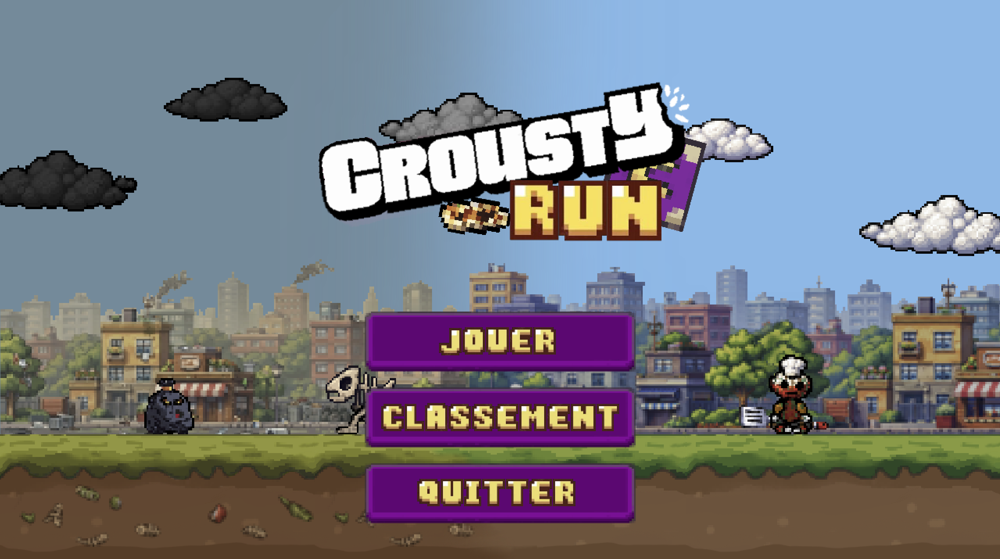
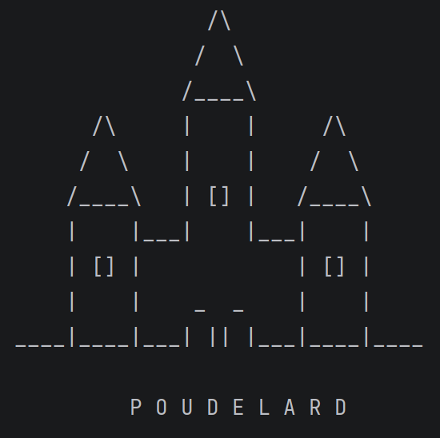

Étudiant en deuxième année de prépa intégrée à l'EFREI Paris en cycle préparatoire aux grandes écoles d'ingénieurs.
Suite logicielle complète d'automatisation immobilière combinant une application de bureau Windows (Electron.js + Python standalone) et une plateforme cloud SaaS hébergée sur serveur dédié.
Par Mohammed Belfar & Malik Bouaissi
Développement d'une chaîne de compilation complète pour un sous-ensemble du langage C.

Par Mohammed Belfar, Malik Bouaissi, Antoine Picou & Mathis Jacques--Llorens
Jeu vidéo 2D en Python intégrant un moteur physique temps réel et une démarche poussée de réduction d'empreinte environnementale.

Par Mohammed Belfar & Malik Bouaissi
Simulation logicielle orientée objet modélisant des entités autonomes et leurs interactions dans un monde dynamique à événements déterministes.
Étudiant ingénieur disponible pour des opportunités de stage, des échanges techniques ou des collaborations sur des projets ambitieux.